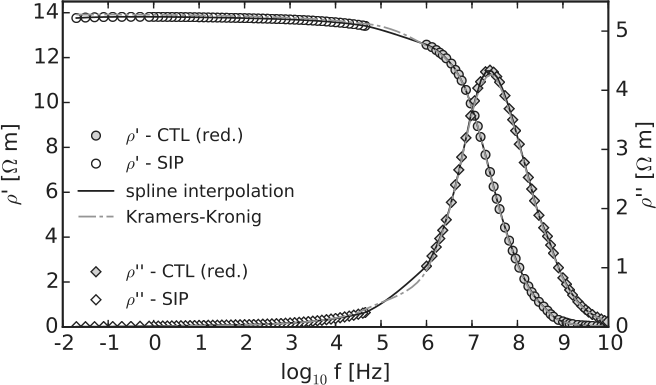
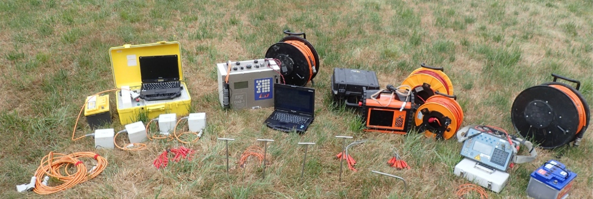
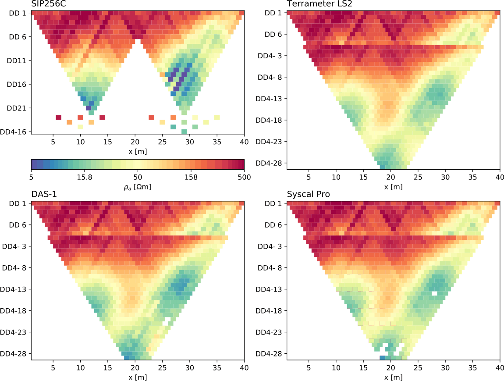
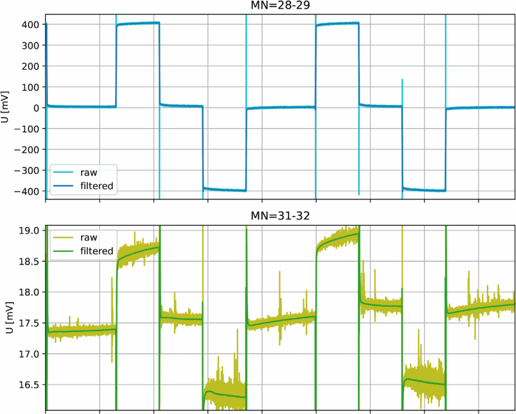
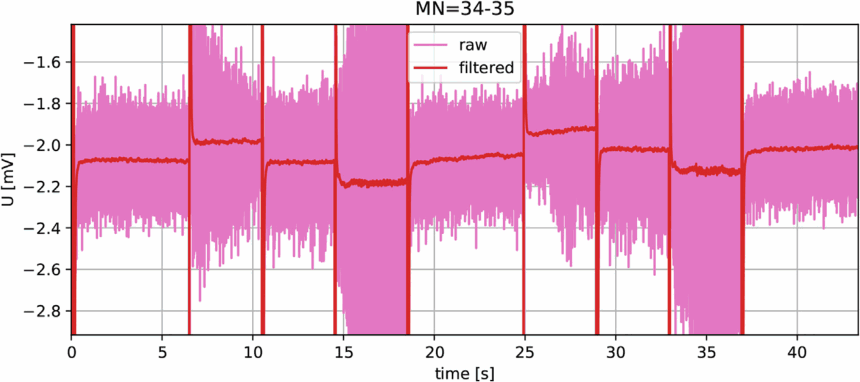
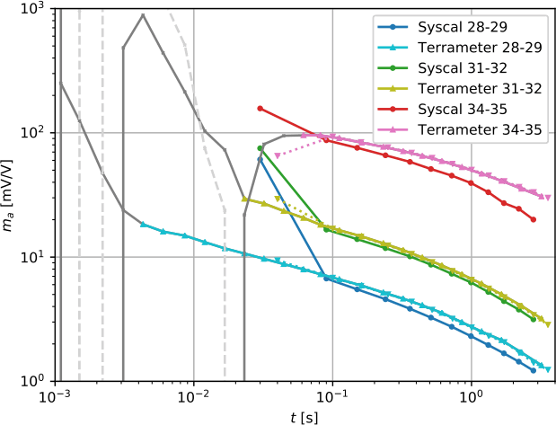
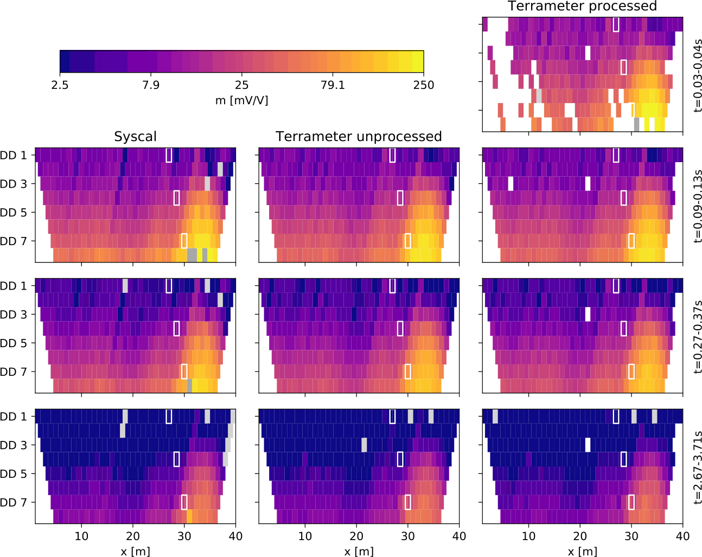
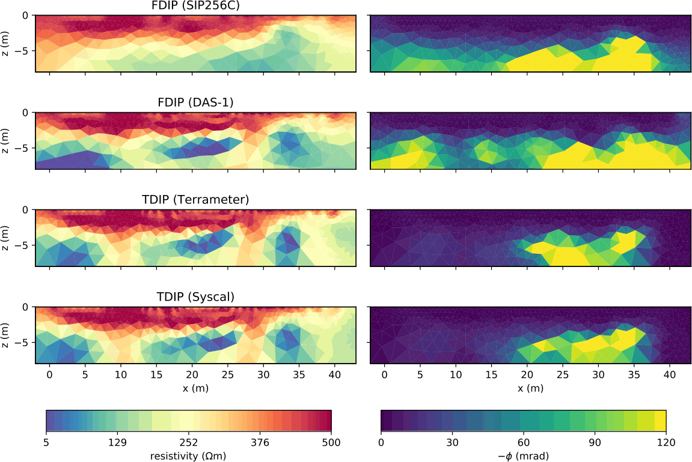
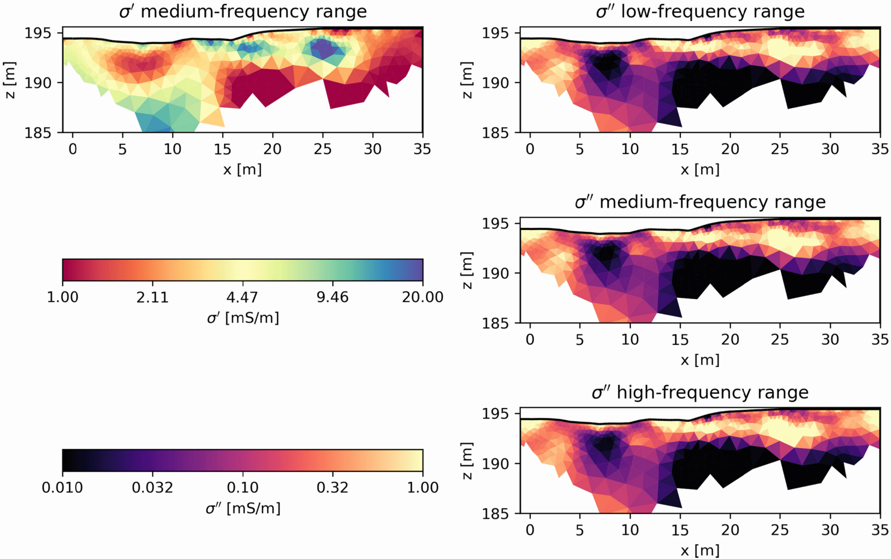
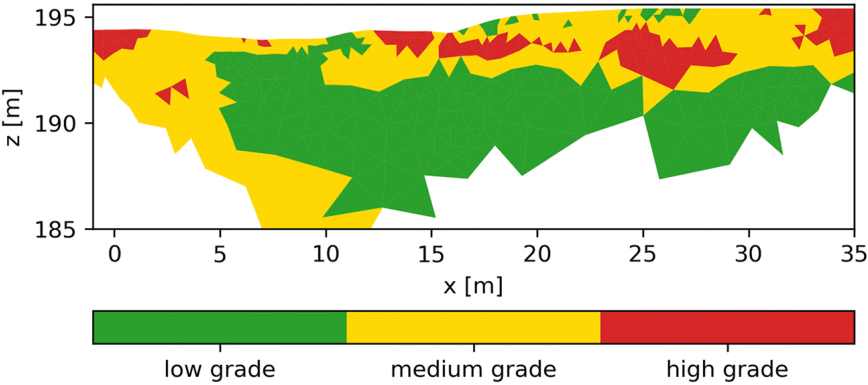

7 Induzierte Polarisation
- bisher Beschreibung durch Widerstands-Netzwerk
- Beobachtung von Aufladeeffekten (Kondensator mit \(\epsilon\))
- bereits durch Gebrüder Schlumberger (1930) & Dachnov (1941)
- Methode der Induzierten Polarisation (Bleil, 1953)
7.1 Äquivalente Pumpen-Kreise
7.1.1 Gleichstrom-Äquivalent


7.1.2 Wechselstrom-Äquivalent (Dentith&Mudge)


7.2 Induzierte Polarisation - Zeitbereich

7.3 Induzierte Polarisation - Frequenzbereich

7.3.1 Phasenverschiebung

\[ \sigma^* = \sigma' + \imath\sigma'' = |\sigma| e^{\imath\phi} \]
7.4 Induzierte Polarisation


7.5 Leitfähigkeit vs. Permittivität
\[ \vb j = \curl\vb H=\sigma\vb E+\epsilon\dot{\vb E}=\sigma\vb E + \imath\omega\vb E = (\sigma+\imath\omega)\vb E = (\frac{\sigma}{\imath\omega}+\epsilon)\dot{\vb E} \]
\[ \sigma^* = \sigma' + \imath\sigma'' = \sigma + \imath\omega\epsilon \]
\[ \rho^* = (\sigma^*)^{-1} = \frac{\sigma' - \imath\sigma''}{\sigma'^2 + \sigma''^2} = \frac{\sigma' - \imath\sigma''}{|\sigma^*|^2} = \rho' - \imath\rho'' = |\rho^*|e^{-\imath\phi} \]
7.6 Relaxationen

7.6.1 Debye-Relaxation
- fundamentale Polarisation
\[ \sigma(\omega)=\sigma_\infty + (\sigma_0-\sigma_\infty)\frac{m}{\imath\omega\tau} \]
- exponentielles Abklingen
\[ U(t) = U_0 m e^{-t/\tau} \]
7.7 Kramers-Kronig Beziehungen
Zusammenhang Real- und Imaginärteil analytischer Funktionen
\[ \rho''(\omega) = \frac{2\omega}{\pi}\int\limits_0^\infty \frac{\rho'(x)-\rho'(\omega)}{x^2-\omega^2}\dd x \]
\[ \rho'(\omega) = \rho'(\infty) + \frac{2}{\pi}\int\limits_0^\infty \frac{x \rho''(x)-\omega\rho''(\omega)}{x^2-\omega^2}\dd x \]
7.8 Kramers-Kronig Beziehungen

7.9 Spektrale Induzierte Polarisation (SIP)

8 Feld-IP
- Messung im Frequenzbereich
- genau, nicht robust
- Messung im Zeitbereich
- klassische Multielektrode
- Auswertung mit
pyBERT- Klassen für FDIP und TDIP
- Prozessing & Inversion

8.1 Vergleich von Geräten (Martin et al., 2020)


8.1.1 FDIP

8.1.2 TDIP


- Filter: Tiefpass, 50Hz, Offset, Drift, Elektrodenpolarisation
- Gating & Stapelung \(\Rightarrow\) Decay


8.1.3 Inversion

8.2 Umsetzung (Martin et al. 2021)

\(\Rightarrow\) Mineral-Grad/Typ 